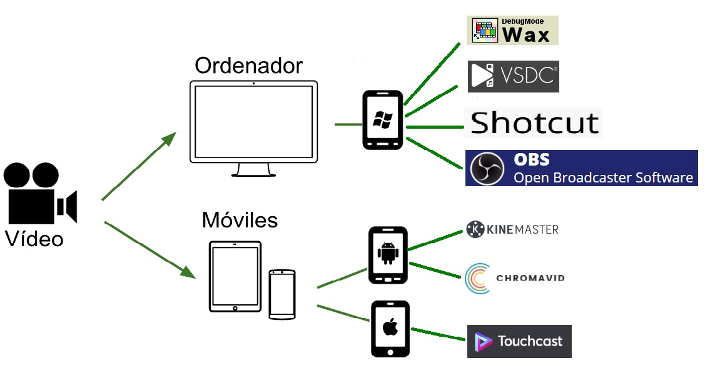

La edición de un video en pantalla verde se ha vuelto muy común entre los editores de videos profesionales. Aunque su uso es muy frecuente en los sectores profesionales de películas y televisión, cualquiera puede utilizar esta técnica para crear su propio video con distintas aplicaciones que podemos encontrar y muchas de ellas de fácil manejo.
Hay muchos editores de video que nos pueden ayudarte a editar en pantalla verde, pero no es fácil elegir en Internet la mejor opción entre todas las disponibles. Existen apps de chroma key para Android, para iPhone e incluso aplicaciones y programas de chroma key online y en directo.
Hemos seleccionado algunos editores de video de pantalla verde para usuarios de Windows y Mac, que podemos utilizar gratuitamente. Algunas de estas aplicaciones como Touchcast dejan una marca de agua, pero a cambio nos ofrecen una gran cantidad de posibilidades.
